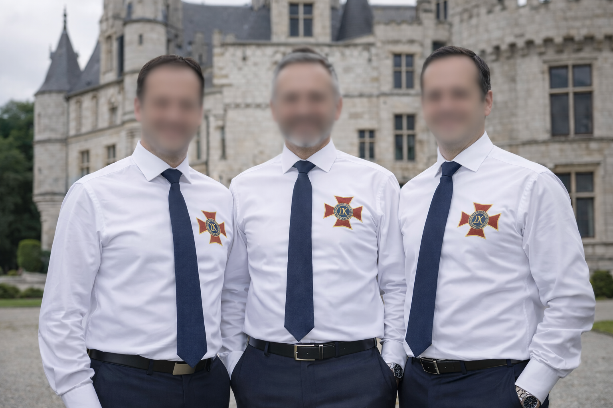
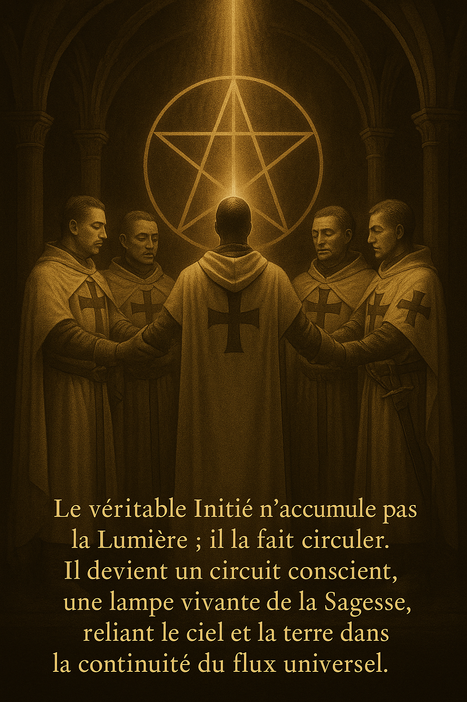
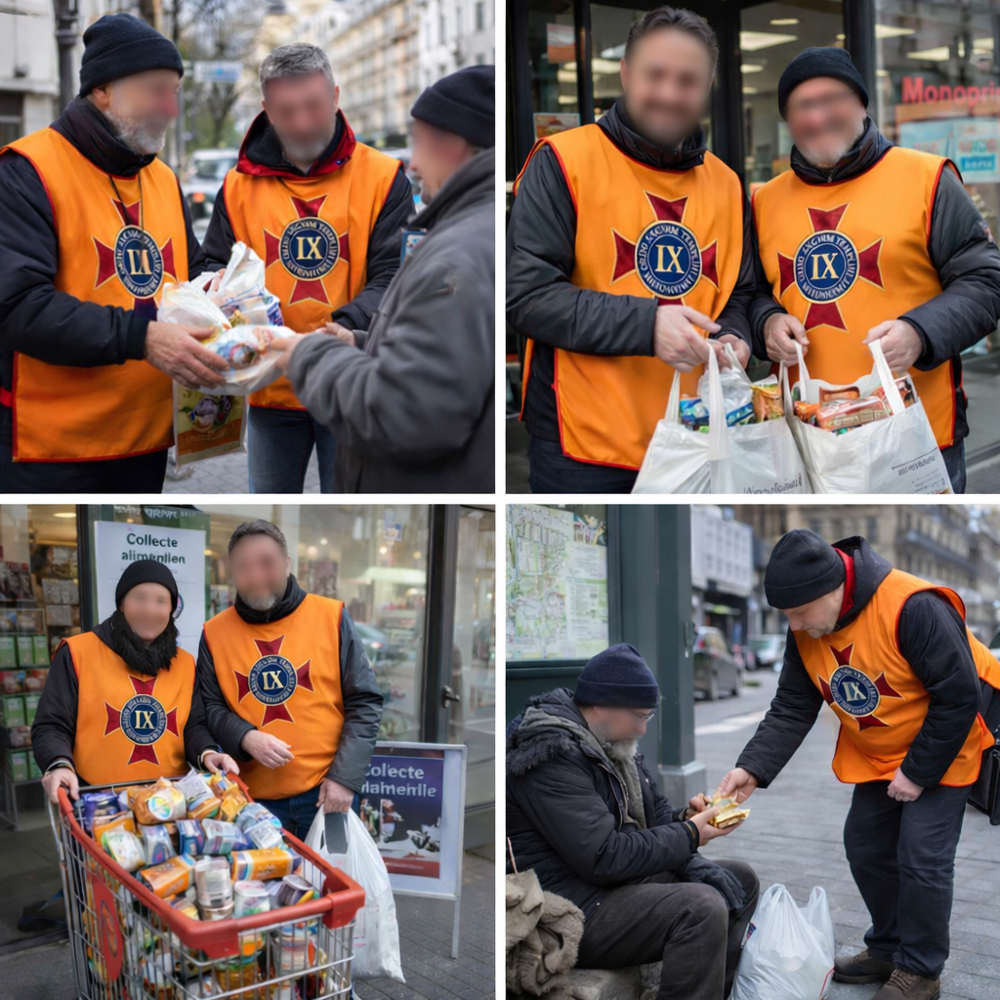
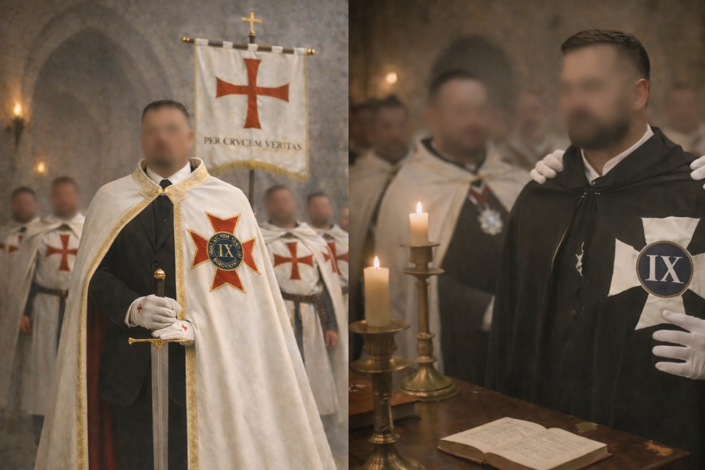
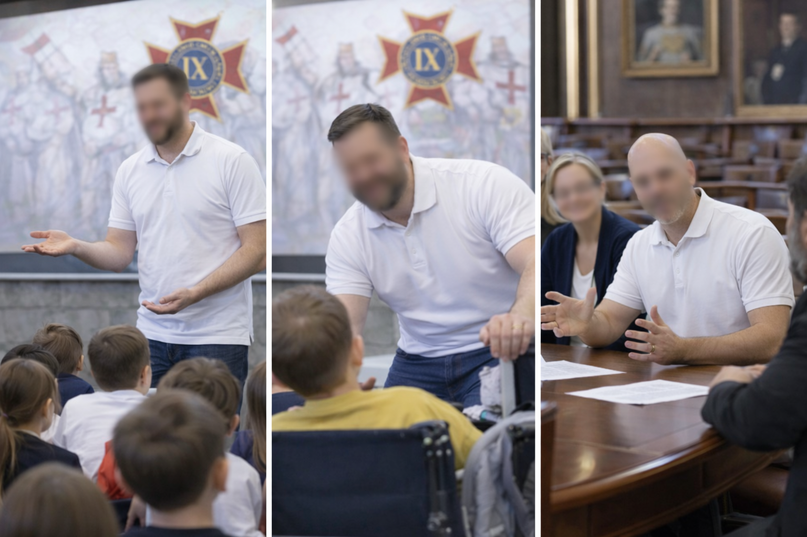

ORDRE SACRÉ DES NEUF TEMPLIERS DE JÉRUSALEM
Notre mission
L’Ordre Sacré des Neuf Templiers de Jérusalem (O.S.D.9.T.D.J.) est une association loi 1901, à vocation culturelle, historique, éducative et caritative. Sa mission est de faire vivre, de manière contemporaine, responsable et accessible, un héritage de valeurs, un patrimoine historique et une démarche de service, au bénéfice du plus grand nombre.
L’O.S.D.9.T.D.J. n’est pas la continuité juridique, de conviction ou institutionnelle de l’Ordre du Temple médiéval, dissous en 1312. Il s’inscrit dans une démarche laïque, associative et culturelle, respectueuse du droit, des institutions et des traditions historiques existantes.

Une fraternité associative structurée
L’O.S.D.9.T.D.J. est également une fraternité humaine et associative, fondée sur la solidarité, le respect mutuel, la loyauté et la responsabilité partagée entre ses membres.
Cette fraternité constitue un socle humain, moral et organisationnel, indispensable à la cohérence et à la continuité de l’action associative. Elle favorise l’entraide, la transmission interne des valeurs, la stabilité des engagements et la capacité à mener des projets collectifs durables.
Une démarche initiatique interne, maîtrisée et encadrée
La démarche de l’O.S.D.9.T.D.J. prend racine dans une tradition initiatique structurée, héritée des ordres chevaleresques et des écoles de pensée médiévales. Cette dimension initiatique constitue un cadre interne, destiné à former les membres, à assurer la discipline, la cohérence morale et la continuité de l’esprit de l’Ordre.
Cette initiation est fermée, volontaire et interne. Elle n’a pas vocation à être pratiquée, enseignée ou imposée au public. Ce qui est proposé au public relève exclusivement d’une approche culturelle, historique et pédagogique, sans engagement requis, sans pratique rituelle publique et sans orientation intérieure imposée.

Servir

Servir signifie agir concrètement. Le service est au cœur de la mission de l’O.S.D.9.T.D.J. : il s’exprime par la présence, l’aide, l’accompagnement et l’engagement au service des autres.
Cette mission se traduit notamment par : des actions de soutien aux plus faibles et aux personnes en situation de précarité ; des initiatives d’entraide, de solidarité et de présence humaine ; une implication associative fondée sur la discrétion, la dignité et la fidélité à la parole donnée.
Servir, c’est incarner les valeurs dans les actes, et non dans les discours.
Protéger le patrimoine et la mémoire templière
Protéger signifie veiller, préserver et transmettre. L’O.S.D.9.T.D.J. œuvre à la protection, à la valorisation et à la transmission du patrimoine templier et médiéval, compris comme un héritage historique, culturel et symbolique.
Cette mission s’exerce par : une approche documentée, rigoureuse et respectueuse des sources ; la prévention des confusions, récupérations et interprétations abusives ; la reconnaissance et le respect des autres ordres et traditions historiques, chacun dans sa légitimité propre.
Il ne s’agit ni de revendiquer une autorité, ni d’imiter une institution historique, mais de préserver une mémoire et un patrimoine communs.
Étudier

Étudier, c’est comprendre avant de transmettre. L’association développe une démarche d’étude, de recherche et de réflexion, portant sur : l’histoire des Templiers et du Moyen Âge ; la symbolique, l’héraldique et les traditions chevaleresques ; le contexte culturel, social et intellectuel des ordres médiévaux.
Cette approche est culturelle, comparative et laïque. Elle n’impose aucune croyance et ne relève d’aucune pratique rituelle.
Transmettre : un pont entre le passé et le présent

Transmettre est l’une des missions essentielles de l’O.S.D.9.T.D.J. L’association agit comme un pont de transmission culturelle entre le passé et le présent.
Sans vocation religieuse ou cultuelle, elle propose au public des récits historiques et symboliques porteurs de repères, capables de nourrir la réflexion, l’imaginaire et le sens de l’engagement, notamment auprès des jeunes générations.
Cette transmission peut s’exercer : dans des établissements scolaires, instituts, écoles ou structures éducatives ; lors de conférences, séminaires et interventions pédagogiques ; par le récit historique comme outil de repère moral, culturel et citoyen.
Une ouverture culturelle, intérieure et partenariale respectueuse des libertés
Dans le cadre de sa mission culturelle, l’O.S.D.9.T.D.J. entretient des relations amicales, respectueuses et partenariales avec des acteurs du monde culturel, patrimonial, intellectuel et cultuel, chacun agissant dans le cadre de ses propres institutions, règles et responsabilités.
L’association n’organise pas de cérémonies de culte, ne dirige aucune pratique confessionnelle et n’exerce aucune autorité intérieure. Elle se situe comme un pont culturel et humain, favorisant le dialogue, la compréhension mutuelle et la transmission du sens, sans confusion des rôles.
Les membres de l’O.S.D.9.T.D.J. demeurent entièrement libres, à titre strictement personnel, de participer — ou non — à des offices, cérémonies ou pratiques confessionnelles, selon leurs convictions individuelles. Ces démarches relèvent exclusivement de la sphère privée et n’engagent en aucun cas l’association.
Lorsque l’O.S.D.9.T.D.J. est présent dans des églises, abbayes ou lieux de tradition, cette présence s’inscrit à titre culturel, symbolique ou patrimonial, toujours dans le respect des autorités compétentes et des lieux concernés. Cette posture permet de maintenir des relations sereines et respectueuses avec les Églises et institutions de tradition, tout en garantissant la liberté de conscience de chacun.
Des actions concrètes pour faire vivre la mission
Pour mener à bien ses missions, l’association organise et participe à de nombreuses activités, nécessaires à la fois à la diffusion culturelle et au financement de ses actions associatives.
Parmi celles-ci : organisation de séminaires, conférences et rencontres culturelles ; mise en place de galas associatifs et événements de soutien ; tenue de buvettes et actions logistiques lors de fêtes locales ; participation active à des fêtes médiévales et manifestations historiques ; organisation d’expositions dédiées à l’histoire templière et médiévale (présentations pédagogiques, panneaux, objets et supports culturels), notamment dans des châteaux, anciennes abbayes et lieux patrimoniaux, en partenariat avec les acteurs locaux et dans le respect des sites ; actions caritatives, humanitaires et solidaires.
Une mission claire, assumée et responsable
L’O.S.D.9.T.D.J. agit dans un esprit de transparence, de respect des lois et de responsabilité associative. Ses titres, symboles et références sont honorifiques, culturels et pédagogiques. Ils ne visent ni à concurrencer, ni à imiter, ni à remplacer des institutions de conviction, historiques ou souveraines.
Sa mission peut se résumer simplement : servir, protéger, étudier et transmettre, en s’appuyant sur une structure initiatique interne maîtrisée, au service du bien commun, de la culture, du patrimoine et du vivre-ensemble.
Repères complémentaires
La mission de l’O.S.D.9.T.D.J. s’inscrit dans une logique d’utilité culturelle et associative, articulée autour de la mémoire, de la transmission du patrimoine templier, de l’histoire médiévale, du respect des sites patrimoniaux, de la pédagogie historique, de la cohésion humaine et de l’engagement solidaire.
Par ses actions, l’association contribue à maintenir vivante une mémoire culturelle accessible au public, à favoriser l’intérêt pour les traditions historiques, à soutenir le dialogue entre culture, patrimoine, symbolique et société contemporaine, et à proposer des activités de sensibilisation autour de l’héritage médiéval et templier.
Cette mission publique vise également à renforcer les liens entre histoire, citoyenneté, transmission morale, patrimoine local, engagement associatif et ouverture culturelle, dans le respect du cadre légal, des libertés individuelles et de la diversité des sensibilités.
Pour toute demande, n’hésitez pas à nous contacter : nous vous répondrons avec plaisir. Vous pouvez aussi consulter nos pages officielles : Statuts, Mentions légales, FAQ, Qui nous sommes, Notre histoire, Histoire du Temple, Emblème et logo.
Le public est le bienvenu : si nos valeurs vous parlent, venez nous rencontrer et prenez part à l’aventure. Chaque aide compte : participer, soutenir, donner un coup de main sur le terrain… on vous attend au sein de l’association. Rejoignez-nous dès maintenant : Adhésion • Contact